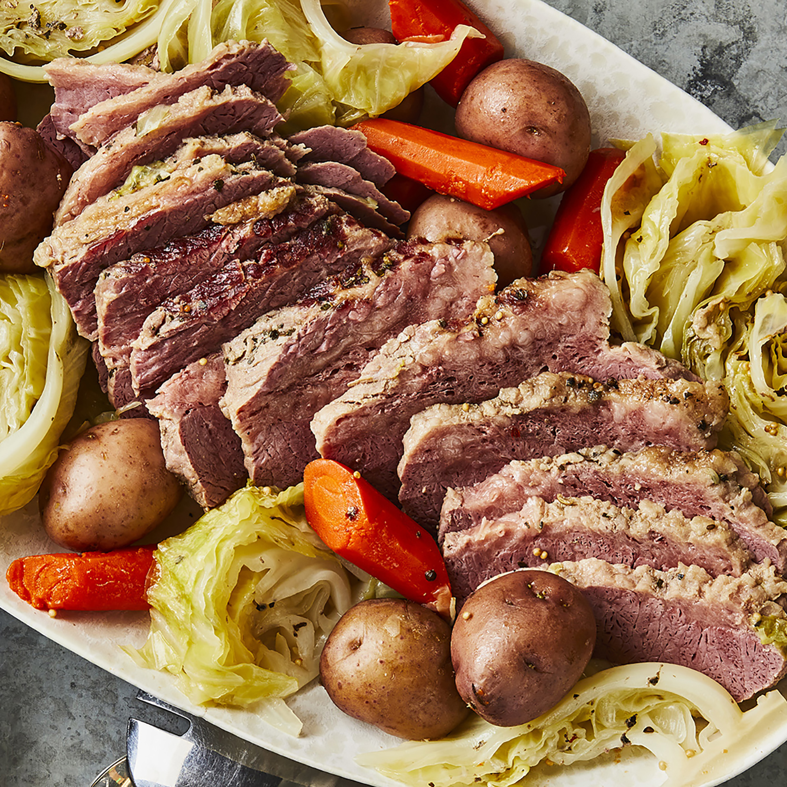

Corned Beef and Cabbage

Description
What's more Irish than a traditional recipe for corned beef and cabbage? Serve with mustard and horseradish if desired
Ingredients
- 1 (3 pound) corned beef brisket with spice packet
- 10 small red potatoes
- 5 medium carrots
- 1 large head cabbage
Steps
- Place corned beef in a Dutch oven and cover with water. Add spice packet, cover, and bring to a boil. Reduce heat and simmer until corned beef is just about fork-tender, about 2 hours.
- While the corned beef is simmering, cut potatoes in half. Peel carrots and cut into 3-inch pieces. Cut cabbage into small wedges.
- When corned beef has cooked for 2 hours, add potatoes and carrots; cook until vegetables are almost tender and meat is fork-tender, about 10 minutes. Add cabbage and cook until tender, about 15 more minutes.
- Remove meat and let rest for 15 minutes. Leave broth and vegetables in the Dutch oven.
- Slice meat across the grain. Serve with vegetables and broth.